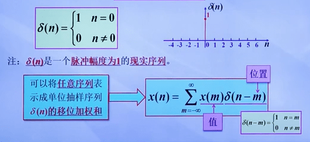
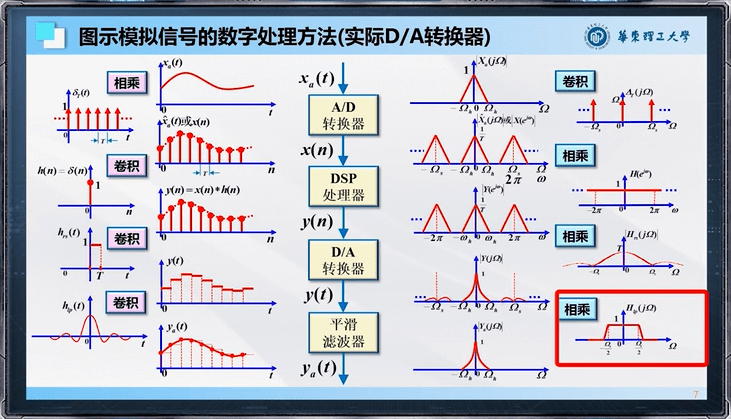
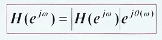

信号与系统 总结和概述
工作后补了这门课，学习过程中可以说非常的惊讶：
- 惊讶计算机学科真是最简单的工科了，这门其他专业的简单基础课，没想到竟然这门难。相比之下，数据结构、操作系统等等计算机的基础课，有点像脑筋急转弯，逻辑占比较重，和数学没有太大关联。
- 惊讶人类的智慧。这种惊讶我在操作系统中也曾多次有过，毕竟操作系统本质上也是一个机械系统。每次看到由工程师将理论变为实用，变为更加实用，都会感慨：啊，作为人类实在太棒了！这门课刚开始的时域频域分解都是数学，并没有对这门课有什么好的想法，但是看到了调制解调，充满了人类智慧的工业艺术品！从那之后，就开始一发不可收拾，深深沉醉这门课的魅力。
- 惊讶计算机竟然不开这么课。一方面这门课是为数不多的用数学较多的课程，另一方面也让学生能了解手里的计算机是这个多媒体世界的基石，原来很常见的一些功能背后是这样的道理。
第一章
能理解这个公式即可：

一个总体的提纲

第二章
主要是理解 z 变换。其实也好理解，连续变量进行拉普拉斯变换，离散变量进行拉普拉斯变换，那就是 z 变换了。

一个很重要的知识点，系统频率响应一定可以写成如下公式，其中 \(|H(e^jw)|\) 叫做幅频响应，后面叫做相频响应：

为什么可以写成这个样式？原因其实就是复数的性质：

第三章
主要就是对傅里叶变换弄懂。
- 傅里叶级数：正常人都能懂
- 傅里叶变换：掌握关键，它的出现是因为傅里叶技术只对周期信号而言，非周期信号，那么我们就需要用新的方式理解。
-
离散时间信号傅里叶变换（DTFT）：这里思路其实特别顺，为什么需要这个？因为我们实际中处理的信号是离散的，然后用傅里叶变换可以推出来。发现带来的结果是频域变得周期了，这也就是为什么频域不能混叠，这就是时域采样定理，即我们用每 T 秒进行采样后，\((2\pi/T)/2\) 以上的频率是必须要丢弃的。
DTFT：本质原因是时域需要离散化

DTFT：本质原因是时域需要离散化

DTFT 的公式推导，就是从傅里叶变换推导来的 -
离散傅里叶技术（DFS）：这里其实真的也特别顺，为什么需要这个？因为我们计算机表达频域也只能用离散的表达！所以频率也要离散。反推回来发现时域就变成了周期。而且这里的转换就是信号处理的频域处理技术的本质。
-
如下图所示，数字信号处理的频域处理技术的本质就是这里：我们先对一个信号时域上离散化，然后转成频域，但我们计算机只能离散化这个频域；离散化之后可以对这个频域进行一些如低通滤波处理；之后再从这个离散化的频域 DFS 转回时域的信号。此时，时域信号是周期的，我们保留主周期即可。

DFS 的由来，频域上需要采样，这是重点 -
那可能就有疑问了，不对啊：如果我本来时间序列是无限长的呢？恭喜你，你已经知道了采样定理的一部分。如下图所示，我们要保证频域采样点数 \(N\) 大于时域的序列长度 \(M\)，所以无限长的序列注定会有损失的。

频域采样定理
-
-
离散傅里叶变换（DFT）：这个就特别特别简单。就理解成，DFS 转换后的时域变成了周期，那我们保留主周期就行了！
DFT，就是保留一个主周期

DFT，就是保留一个主周期
第四章
DFT 加速成 FFT，略
第五章 - 第七章
第五章讲了 IIR 和 FIR 的基本概念，然后讲了它们各自的滤波器结构。首先就是要明确的是 IIR 和 FIR 是数字滤波器！！，这是要一直记住的。后面几节下面再说。
IIR 和 FIR 的区别，IIR 是无限长，FIR 是有限长：
- IIR: \(y(n) = 0.5*x(n) + 0.5*y(n-1)\)；
- FIR: \(y(n) = 0.5*x(n) + 0.5*x(n-1)\)。
第五章前半部分 + 第六章全部，是讲的 IIR 滤波器；第五章后面 + 第七章是讲的 FIR 滤波器。下面就按照类型进行说明。我们设计的时候，第一步就是想要设计出 IIR 还是 FIR，然后根据下面的方法去进行设计。
IIR 滤波器设计
如果要设计 IIR 滤波器，应该怎么办？流程如下：
1. 先根据参数，设计模拟巴特沃斯滤波器（也就是第六章前面几节）

2. 模拟滤波器用一些方法转成数字滤波器（也就是第六章后面几节说的两个方法）

3. 转成数字滤波器之后，我们得到的是什么？我们得到是 H(z)，有了它我们可以干什么？我们就可以用第五章里面几节说的方法，设计出数字滤波器的结构，即用一些物理寄存器、乘法器之类的器件构造出我们想要的 IIR 数字滤波器。


第七章 - FIR 滤波器设计
第七章就是讲如果要设计 FIR 滤波器，应该怎么办？方法是：
1. 首先要明确，我们设计的叫做线性相位的 FIR 滤波器，FIR 滤波器不只这一种。这里的线性相位是指系统的频率响应函数可以写成如下的 FIR 滤波器：


2. 在这个基础上，就研究了上面图片中的一类二类线性相位，最后能得出系统冲击响应 h(n) 是奇还是偶函数。这里的 N 就是 FIR 滤波器有限长度的长度。

3. 之后就是四类 FIR 滤波器，进行了讨论，看看各自适合什么。比如下图中就是可以做低通滤波器。pi 就是系统最大频率。

4. 前面都是理论基础，然后就是正式设计了。三种方法，只看频域采样设计方法既可以，按照一个例子说明最好，按照一个例子说明最好：


5. 最后同样，确定了公式，就可以用寄存器这些器件构造出滤波器了

总结
所以第五章后面几节就是讲第六第七章设计完数字滤波器的公式之后，如何搭建它。具体细节就不用多研究了，可以看视频。上面的例子中都是用最简单搭建方法来做的，意思到了即可。而第六章第七章则是讲的如何构建 IIR 或者 FIR 的公式。
问题：那么模拟滤波器在哪里用到的？
回答：在构建 IIR 公式那儿用到了一次。先根据参数确定了模拟滤波器，进行时域采样，就能转成 IIR 滤波器了